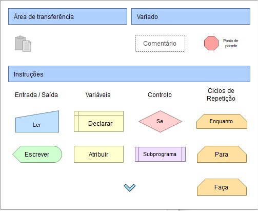

Na matéria de Pensamento Computacional aprendi que:
Pensamento Computacional é habilidades cognitivas da ciência da computação que serve para a resolução de problemas, habilidade para resolver problemas e desafios de forma eficiente, assim como um computador o faria (no ponto de vista humano). O Pensamento se divide em quatro partes: abstração, algoritmos, decomposição e reconhecimento de padrões.

Na parte de abstração, desenhei tudo aquilo que era analisado no meu ponto de vista, por exemplo analisar um código que demonstra uma calculadora e a abstração ser números ou operações matemáticas.
Na parte de algoritmos, utilizei fluxogramas. A professora mostrou alguns exemplos de layouts para a padronização dos algoritmos, por exemplo:
Os símbolos ao lado são parte do código, juntando todos você cria um programa que resoluciona problemas tal como qualquer outro tipo de linguagem, por exemplo: Java, Python, Ruby, etc. O software utilizado para estudos foi o 'Flowgorithm'.
A decomposição de problemas vem para auxiliar os outros tópicos citados. Você pega o problema em questão e separa ele em pequenas partes para ajudar na compreensão, e assim, juntando tudo o que você entendeu do assunto e finalizando o algoritmo.
O reconhecimento de padrões envolve identificar regularidades e características distintas em conjuntos de dados. Algoritmos e técnicas são usados para extrair informações e tomar decisões com base nos padrões identificados.